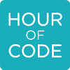

Welkom bij CoderDojo Waregem
CoderDojo organiseert wereldwijd bijeenkomsten voor jongeren van 7 tot 17 jaar waar ze in groep leren programmeren. Ben je minstens 7 jaar en jonger dan 18 jaar? Hou je van computers en zelf (leren) programmeren? Dan is CoderDojo helemaal iets voor jou! Leer alles over programmeren en ga er onmiddellijk mee aan de slag. Geen saaie theorielessen maar gewoon doen: spelletjes bedenken, apps ontwikkelen, robots besturen en websites maken. Je hebt helemaal geen voorkennis nodig, maar we vragen wel om bij voorkeur een eigen laptop mee te brengen.
Eén zaterdagvoormiddag in de maand organiseert CoderDojo Waregem gratis workshops (doe-het-zelf lessen) voor jongens en meisjes van 7 tot 17 jaar. Onze Dojo vind je in de bibliotheek van Waregem en wordt ondersteund door een enthousiast team van coaches: vrijwilligers die de workshops voorbereiden en begeleiden. Ze leggen uit, doen voor, leren aan en stimuleren fantasie, creativiteit en de ontwikkeling van programmeervaardigheden. Ouders zijn meer dan welkom als ze dat willen. Kinderen tot 12 jaar moeten bij hun eerste deelnames altijd vergezeld zijn van een volwassene.

De regels van CoderDojo zijn heel eenvoudig:
- regel #1: above all, be cool — behandel anderen altijd met respect en help elkaar
- ask 3 before me — vraag hulp aan deelnemers die naast je zitten, aan dezelfde tafel, aan andere tafels; als niemand de oplossing weet voor je probleem zoek dan hulp bij een coach en deel de oplossing met de anderen aan wie je eerst hulp gevraagd had zodat ze er ook iets van leren
- speel geen spelletjes die je niet zelf gemaakt hebt tijdens de CoderDojo
- coaches coachen — ze helpen je bij de volgende stappen, geven tips, verklappen truucjes, maar geven niet noodzakelijk kant-en-klare oplossingen voor problemen die opduiken tijdens het programmeren; zo helpen ze je om te leren hoe je zelf problemen kan oplossen; dat is pas cool!
- CoderDojo organiseert doe-het-zelf lessen — we zijn geen school! loop rond, vraag aan anderen wat ze aan het doen zijn, en zorg dat je er vooral veel plezier aan beleeft
- laat het aan je ouders weten als je het lokaal moet verlaten
- help de eet-en-drink-stand proper te houden en gooi je afval in de prullenbak
Deel deze video over CoderDojo met je vrienden en klasgenoten als je hen over CoderDojo wil vertellen.
"Er worden regelmatig foto's of video's genomen tijdens de Dojo's. Door inschrijving en deelname aan de CoderDojo-activiteiten, gaat U er als ouder of voogd mee akkoord dat er beeldmateriaal kan genomen worden van uw kinderen en dat dit beeldmateriaal kan gebruikt worden voor publicatie in het kader van bekendmaking/marketing van CoderDojo. Indien U hiermee niet akkoord bent, kunt U dit laten weten aan waregem@coderdojobelgium.be."
CodeUuur 
Tijdens de week van het programmeren die loopt van 5-11 december 2016 organiseren scholen in meer dan 180 landen het CodeUur (Hour of Code). Het doel is om tientallen miljoenen leerlingen wereldwijd tijdens een activiteit van één uur te laten kennismaken met de wondere wereld van programmeren. Iedereen kan waar dan ook een CodeUur organiseren (ook buiten de week van het programmeren), want er werden heel wat kant-en-klare uitdagingen uitgewerkt, waarvan de meeste ook in het Nederlands vertaald werden. Je hebt helemaal geen ervaring nodig, enkel een computer die verbonden is met het Internet. De activiteiten leggen zichzelf uit en staan open voor jongeren van 4-104 jaar. Verder op deze webgpagina vind je alvast enkele activiteiten van het CodeUur die we in CoderDojo Waregem gebruikt hebben. Kijk voor meer informatie op code.org.
Vanuit CoderDojo Waregem geven we onze volle steun aan het CodeUur, omdat we geloven dat elke leerling de kans moet krijgen om te leren programmeren op school. Het helpt probleemoplossende vaardigheden, logica en creativiteit te ontwikkelen. Daarom dagen we de ninja's van onze CoderDojo uit om met hun klas/school ook een CodeUur te organiseren. Ben je leerkracht en wil je graag wat hulp bij het opzetten van een CodeUur-activiteit op jouw school? Contacteer ons dan op waregem@coderdojobelgium.be, en dan kijken we of een van onze coaches zich kan vrijmaken om de activiteit mee te helpen voorbereiden/begeleiden.
CoderWaar ?
bibliotheek Waregem
Boekenplein 1
8790 Waregem
email: waregem@coderdojobelgium.be
CoderWanneer ?
Deelname aan CoderDojo Waregem is gratis, maar je moet wel op voorhand inschrijven. Het aantal plaatsen is beperkt: ben je verhinderd om deel te nemen aan een event waarvoor je bent ingeschreven, schrijf je dan terug uit via Eventbrite en maak zo je plaats vrij voor andere geïnteresseerden. Alle plaatsen volzet? Geen nood: teken in op de wachtlijst zodat je automatisch verwittigd wordt als er plaatsen vrijkomen of inschrijvingen openen voor volgende events.
- zaterdag 29 oktober 2016, 10:00-13:00 (foto's)
- zaterdag 19 november 2016, 09:00-12:00 (foto's)
- zaterdag 10 december 2016, 09:30-12:30 (inschrijven)
- zaterdag 21 januari 2017, 09:30-12:30
- zaterdag 25 februari 2017, 09:30-12:30
- zaterdag 18 maart 2017, 09:30-12:30
- zaterdag 15 april 2017, 09:30-12:30
- zaterdag 13 mei 2017, 09:30-12:30
- zaterdag 17 juni 2017, 09:30-12:30
CoderKata
Kata (型, かた) is een term uit de Japanse zelfverdedigingskunsten en vechtsporten die staat voor een individuele stijloefening met een reeks vastgelegde bewegingen, uitgevoerd tegen 4 tot 8 denkbeeldige tegenstanders die uit verschillende richtingen aanvallen. Het is een gedetailleerde reeks vooraf vastgestelde stoot-, trap- en afweertechnieken, die typisch bestaat uit tientallen zeer uiteenlopende bewegingen en technieken. De gehele kata duurt gewoonlijk zo'n 1 à 2 minuten.
Bij programmeren moet je — net zoals bij zelfverdedigingskunsten en vechtsporten — heel wat verschillende technieken onder de knie krijgen die je op een welbepaalde manier moet combineren om een opdracht uit te voeren. In de CoderDojo leer je deze technieken spelenderwijs beheersen door middel van een onze eigen kata: opdrachten die je op weg helpen. Eenmaal je de technieken onder de knie hebt, ben je in staat om ze vrij toe te passen en te combineren om zelf dingen te gaan bouwen. Dit zijn de kata waar we momenteel aan werken:
Boeken over programmeren voor kinderen/jongeren die de bibliotheek van Waregem in haar collectie heeft.
Coaches en Cooks
Heb je passie voor ICT en beschik je over wat didactische vaardigheden. Word coach en help mee jongeren te inspireren en te leren programmeren. Of wil je liever wat logistieke ondersteuning geven om bijvoorbeeld een cake te bakken voor onze snackbar of te helpen zoeken naar sponsors. Word cook en help mee onze CoderDojo up and running te houden. Contacteer gerust een van onze coaches of cooks voor wat meer uitleg wat er van je verwacht wordt.
Onze coaches:
- Peter Dawyndt
- Dries Desmet
- Mattijs Eggermont
- Christophe Fauconnier
- Michel Lambrecht
- Patrick Meuris
- Sam Schotte
- Dominiek Vandewalle
Onze cooks:
- Pieter Dewolf
Een van onze coaches was in een lyrische bui toen hij het volgende uit zijn pen liet vloeien aan de vooravond van de eerste CoderDojo in Waregem:
iedere mens,
heeft wel een kleine wenseen wens heel stiekem of fijn,
een wens ergens opgeslagen in zijn breinmisschien wel een wens om kindjes te leren coderen,
hun de kneepjes van het vak aan te leren,hun eigen games te laten creëren,
lang nog voor ze zelfs maar afstuderenkindjes stimuleren om creatief te zijn,
het stimuleren van hun jonge breincoderdojo Waregem is begonnen,
nu maar hopen dat hun creativiteit wordt ontgonnen
CoderPress
- Programmeren is kinderspel (Krant van West-Vlaanderen, editie Waregem, vrijdag 25 november 2016)
- Programmeren voor de jeugd met Coderdojo (Infokrant Waregem, vrijdag 25 november 2016)
{kind=link}
Bouw je mee ?
CoderDojo Waregem wil graag investeren in educatief materiaal dat helpt om kinderen op een speelse manier te leren programmeren. CoderDojo wordt volledig ondersteund door vrijwilligers en daarom zijn we ontzettend dankbaar voor elk financieel duwtje in de rug, dat onmiddellijk in de toekomst van onze kinderen kan geïnvesteerd worden. Wil je graag een financiële bijdrage leveren of heeft je bedrijf bijvoorbeeld laptops of tablets die niet meer gebruikt worden, neem dan contact op met waregem@coderdojobelgium.be.
Niemand had de moeite genomen om me te zeggen dat het onmogelijk was. Dus ging ik naar huis en deed het gewoon.
Duke Ellington (over hoe hij in één weekend de muziek voor een volledige musical schreef)